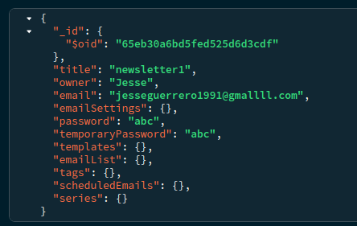
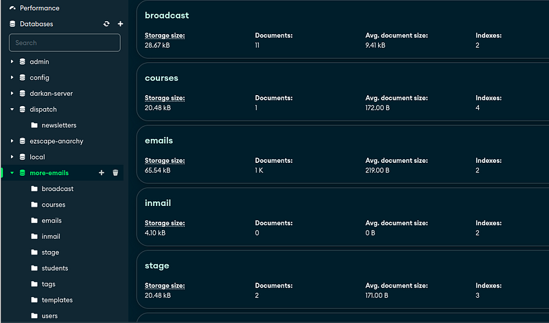
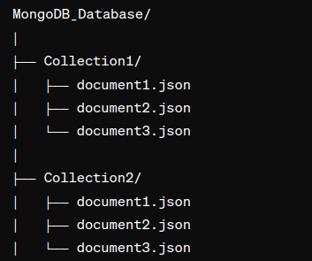
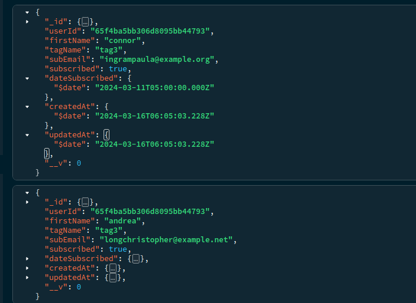
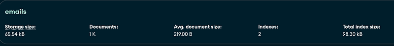

Programmers use Mongo to create applications with simplicity. The entire purpose of Mongo is an easy database to read and write at scale.
It is both fast and simple. I consider MongoDB to be easier than SQL databases. Setting up, reading, writing and all the commands are easier.
The nicest thing about Mongo, we can use it for all applications-so long as we design the database well.
What is the document model?
Mongo is simple because it follows a document model. This method of storing data uses simple JSON files as a document.
Take a look...
Here I have a simple User account for an application. Notice there are no tables and relations between tables. Because of this the document model is known as a NoSQL model.
Similar document model databases include DynamoDB by AWS, Couchbase, RavenDB and many other ones.
The most popular document model databases are DynamoDB and MongoDB.
These types of databases are easier to design, use and read than SQL. Coders sacrifice flexibility for ease of design in the document model.
What are collections?
These documents are placed in collections. Take a look:
This is the structure inside Mongo-we have databases which store collections which store documents.
The database is the highest level and the document is the lowest level. It is like a file system. In the database folder we have collection folders which hold document files.
It is a folder in a folder in a folder.
What are some common commands?
This folder structure is sooo simple. How in the world are we supposed to design a database around this structure? Isn't it too simple?
What makes Mongo so cool is how we access documents. Mongo creates internal maps which link things like firstName, tagName within one collection and allows you to ask for it directly.
We call this indexing. In the same way we access a variable in Python, we access Mongo documents in an index:
# Creating a simple map using a dictionary
simple_map = {
"name": "Alice",
"age": 30,
"city": "New York"
}
# Accessing data from the map
print("Name:", simple_map["name"])Because it is a map, it a simple 1 operation move, O(1). This mapping between firstName, tagName and the collection is known the index itself.
Indexing is a common database feature. Those other document models do it, SQL does this too.
When we ask for a document id or set of firstName, tagName we are asking for a map. Lets look at a simple command that does this.
Take a look at this document:
We have over 1000 emails inside a more-emails database folder inside the emails folder. We choose our documents using a shell command:
use more-emails # db is more-emails
db.emails.findOne({
"firstName": "connor",
"tagName": "tag3"
})First we specify db is more-emails. Then we enter the emails collection and we findOne with JSON firstName and tagName.
It returns a JSON object,
{
"_id": {
"$oid": "65f5368f3585ac7a228cca1c"
},
"userId": "65f4ba5bb306d8095bb44793",
"firstName": "connor",
"tagName": "tag3",
"subEmail": "ingrampaula@example.org",
"subscribed": true,
"__v": 0
}In a nutshell that is all of mongo. We have a bunch of commands which access the documents with ease.
We specify the database folder and the collections folder and we ask Mongo "give us this document".
How do coders/libraries access Mongo with code?
These commands above are used inside the Mongo Shell. You start the Mongo Shell differently in every operating system but it generally goes like this:
mongosh
use more-emails
db.email.find({"firstName": "jesse"})The shell automatically goes to our localhost but we can go to remote databases this way:
mongosh "mongodb://72.168.9.1.1:27017"If it is secured then we enter a password. Then we can use any custom commands to access and manipulate documents, collections and databases.
Coders use wrappers for the Mongo Shell.
Take a look:
public class MongoExample {
public static void main(String[] args) {
MongoClient mongo;
mongo = MongoClients.create("mongodb://localhost:27017")
// Access the 'more-emails' database
MongoDatabase database = mongo.getDatabase("more-emails");
// Access the 'emails' collection
MongoCollection<Document> collection;
collection = database.getCollection("emails");
// Create query to search for documents where firstName equals 'jesse'
Document query = new Document("firstName", "jesse");
// Execute the query
FindIterable<Document> documents = collection.find(query);
// Iterate over and print the documents
for (Document document : documents) {
System.out.println(document.toJson());
}
}
}This is exactly the same as:
mongosh
use more-emails
db.email.find({"firstName": "jesse"})The difference is that we can use loops, custom functions, all the mongo commands translated to Java, Python, C++, every language.
These languages wrap the Mongo commands and Mongo shell into functions and classes we can use.
What is cool, once you learn a majority of the commands and 1 or 2 programming languages-you can easily use Mongo in any language.
The way the database is organized in code is very similar across frameworks and languages.
Scalability
I was surprised when I first started using Mongo. I created some stress tests in Python to see how quickly I can process Mongo documents.
In the script I placed 50,000 documents into one collection then asked for a bunch of documents 10 at a time sorted by firstName and by pages.
What is insane, even organizing 50K documents the total size of the collection was under 2MB and the sorting was instant.
Because of how many documents Mongo can hold and how quickly I can access documents I can see why companies use this for enterprise.
It is totally valid for real production.
These enterprises can store millions upon millions of documents with minimal storage used and call it big data.
Why?
Because relative to other databases and file systems, Mongo takes up very little space and is extremely fast.
How to learn Mongo
Databases are a service which you use to your liking. You can take any app that you are creating and plug & play databases. Mongo is no different.
You can make video games, web apps, mobile apps, graphics programming projects, web tools, GUI programs, all kinds of programs in a SQL model, NoSQL or document model.
If you want to learn Mongo you can include it in your app like any other database.
There is nothing wrong with a little experimentation. For each of these apps I do recommend creating a backend API.
Multiplayer video game
For us-in a multiplayer video game I contribute to-we have the game server, game client, website, Mongo database and backend API.
The backend API is the fulcrum of all those services and how everything accesses the database.
By separating the code this way we make our development much easier. We learn more and we know where the errors can be.
The backend API can be written in any language and looks like the Java code above.
Web application
I also have a personal web application which uses MongoDB. I separated the application between a frontend, a backend API and the database.
This is the gold standard. You have a client-it can be a website, a video game in Unity, a mobile app, a GUI, whichever- as the frontend and you hook it up to a backend API which accesses the database.
If you follow this gold standard a few times you should find it easier and easier to recreate applications with a separate frontend and backend.
All the examples above came from my personal web application.
Other uses
You can create small scripts and tools that are completely independent to keep track of application data.
Stuff like Bit Coin, stock market trends, all kinds of things.
You can also learn Mongo by creating plugins or hooks to a database. Such as a 7 Days to Die mod, a Minecraft plugin, a ModPack or any other video game extension.
In Minecraft there are plugins which use databases to store currency. Vault is one of them-whereby you use your own database to store everything,with no data saved on your server or your player's server.
Let's get into some questions...
FAQ
Can I use MongoDB with any application?
Yes, Mongo is extensible to any application so long as you design the database well. An improperly designed Mongo Database will not scale. Hopefully you can find someone to help you design it if you plan to scale it.
Do I have to be an advanced programmer to use Mongo?
Hmm, the requirements for learning Mongo is knowing the fundamentals of programming and at least half a language. Beyond that you become an advanced programmer by using Mongo.
You + Mongo = More advanced
How do I install MongoDB?
When you install Mongo I recommend Mongo Compass and the Mongo software.
Take a look at these videos for more:
Windows: https://youtu.be/xhSm4o-lDb4?si=VVrl2cm2YZuQrA-0
Mac: https://youtu.be/MyIiM7z_j_Y?si=VVHOl3JtIT69MsfA
Ubuntu Linux: https://youtu.be/ZiQPyD82ojk?si=01FBuP7zfwDvGWhm
How do I learn the individual commands of Mongo?
First and foremost I recommend looking up an example API on GitHub which uses your language/framework on Mongo. Then keep the code in a separate window, read it, copy it and learn from it.
In addition, language models are very well trained for Mongo. I recommend asking a language model how to create X, Y, Z on your application and slowly learning Mongo from the LLM.
You can also ask the language model what that example API means on GitHub.
Combining these two, an example project and a language model is a fantastic way to learn anything in programming.
How do I backup and store my MongoDB?
Mongo comes with two commands, mongodump and mongorestore. The typical way programmers backup their data is by using these commands in a shell script.
We run the shell script with either a task scheduler in Windows or a cronjob in Linux. We dump the MongoDB into a binary then upload it to a cloud storage or separate hard drive.
Anywho, I hope you learned something...
CTA: Check out my book on learning code
Happy coding!
Resources
Why databases: How Databases Work and Why They Are So Cool